お手手とおシッポの扱い方 [梅吉]
皆さま、風邪へのお気遣いのコメントありがとうございましたm(_ _)m
めきめき回復をしてもうすっかり大丈夫です！
冷たい空気に咳き込んだりはしますが暖かくなったらそれも無くなるでしょう＾＾
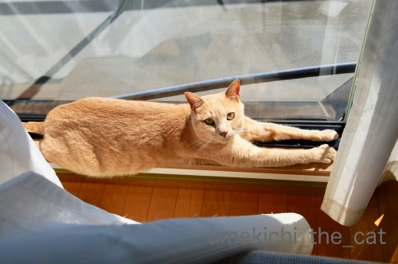
寝ている時やちゅうちゅう時にお手手を伸ばしていることが多いですが
日向ぼっこ中もお手手が伸びちゃいますよ＾＾
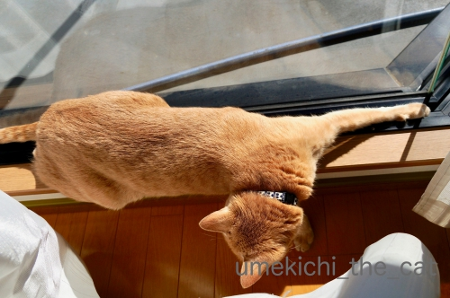
暑くなってきたでしょ(*>艸<)
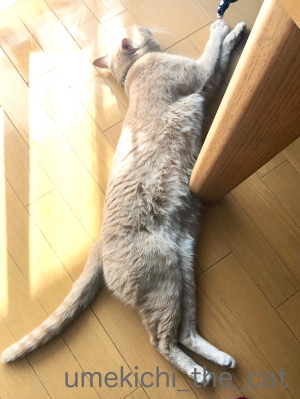
フローリングでクールダウン。
びろ〜ん。
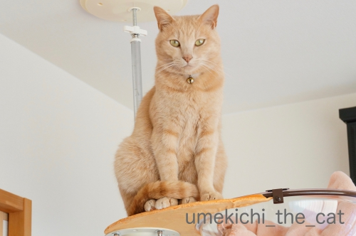
お手手は開放的な梅吉さんですがおしっぽはの扱いは几帳面。
前足の上にきちっと乗せるんですよ(≧▽≦)
先っぽをくるりと丸めるのがチャームポイント？
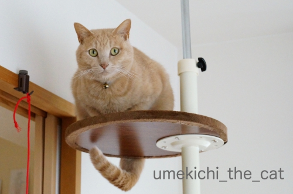
前足に載せていない時もだらりと垂らさず形をキメてます！
くいっと曲げた形、ハンガーでもかけてみようかと思ったらパンチされましたwww
いつもきちんとおしっぽを扱っているせいでしょうか
人間に踏まれて「ぎゃ！」ということは我が家では滅多にありません。
そのかわり歩く人間の足にスリスリアタックしてくるので
前足を踏まれて「ぎゃー！」ということは良くあります。
気分が乗っている時は（爆）「ぎゃー！」と鳴きながらおっとの足の前に体を投げ出して
踏まれてないのに「ふんだやろ！しかえしや！！」とガブガブしてます(⌒-⌒;
当たり屋かwww
 ↑ガブッと一押し↑
↑ガブッと一押し↑
ちぃ吉、どうしてそんなことを・・・
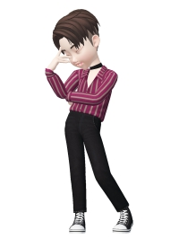
僕はスケーターとして悩んでいるんだ。
何をやってもH生くんとU野くんには
敵わないって・・・
アフロが僕を変える切っ掛けになるんじゃないか
そんな気がするんだ。
パーマじゃなくてね。
ファンキーさとグルーブ感、あの二人には無いものだし。
でもそもそもどうして僕だけアフロじゃないの？姉さん。
ママンは本当に何も話していないのね。
アフロ族には３つのパターンがあるの。
私たち３姉妹は生まれた時からアフロなの。
年頃になって自分でアフロか普通の髪型か
時々でコントロール出来る様になったわ。（！！！ちぃさんの心の声）
もう一つが生涯アフロとは無縁な人。
そしてもう一つが18歳の年に突然アフロになる人なの。
我が一族では過去に一人もいなくて世界的に見ても数人。
私も詳しくは知らないんだけど・・・

僕18歳だよ！
でもアフロにはなっていない。
僕は、僕はこのままなんだ・・・
ちぃ吉
運命の日は18歳の夏至の日なの！
これも巡り合わせかしら。明日は夏至よ。
そして・・間も無く日付が変わるわ！！
ちぃ吉、心の準備をなさい。
みんなにあなたの運命を見届けてもらうのよ！！！
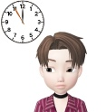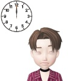
ちぃ吉くんやったわー！
で、伝説の青アフロだ・・・
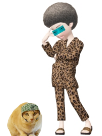
ママンが家を出た理由は
やっぱりこれだったのね・・・
てんてんちゃん、今は、
もう暫くは青アフロには触れずにいてもらえるかしら・・・
数ヶ月後・・・・・
「ねえねえ、ちぃ吉くん５回転飛べる様になったんだって？」
「うん！ニュースで見た見た！！アフロパワーってやつかしら？」
「試合で決まればオリンピックの代表は確実ね」
「そうなったらオーナーがみんなを応援に連れてってくれるって！」
そうよ〜。
みんなで応援に行きましょうね！
さ、お店も今日から再オープンよ。
お客様がもう並んでくださっているわ。
みんな、よろしくね！！
〜おしまい〜
長々とお付き合いありがとうございましたm(_ _)m
その気になったら続編があるかも！？
一年先くらいにねー(*>艸<)
めきめき回復をしてもうすっかり大丈夫です！
冷たい空気に咳き込んだりはしますが暖かくなったらそれも無くなるでしょう＾＾
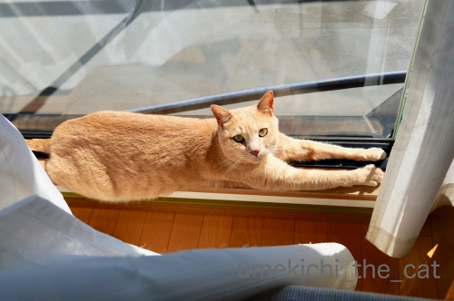
寝ている時やちゅうちゅう時にお手手を伸ばしていることが多いですが
日向ぼっこ中もお手手が伸びちゃいますよ＾＾
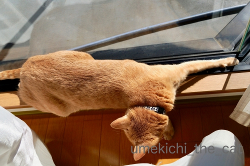
暑くなってきたでしょ(*>艸<)
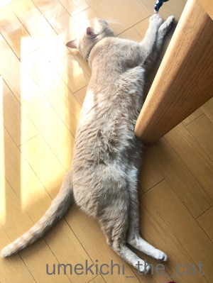
フローリングでクールダウン。
びろ〜ん。
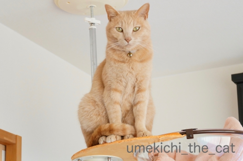
お手手は開放的な梅吉さんですがおしっぽはの扱いは几帳面。
前足の上にきちっと乗せるんですよ(≧▽≦)
先っぽをくるりと丸めるのがチャームポイント？
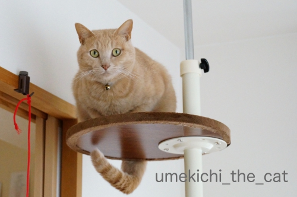
前足に載せていない時もだらりと垂らさず形をキメてます！
くいっと曲げた形、ハンガーでもかけてみようかと思ったらパンチされましたwww
いつもきちんとおしっぽを扱っているせいでしょうか
人間に踏まれて「ぎゃ！」ということは我が家では滅多にありません。
そのかわり歩く人間の足にスリスリアタックしてくるので
前足を踏まれて「ぎゃー！」ということは良くあります。
気分が乗っている時は（爆）「ぎゃー！」と鳴きながらおっとの足の前に体を投げ出して
踏まれてないのに「ふんだやろ！しかえしや！！」とガブガブしてます(⌒-⌒;
当たり屋かwww
ちぃ吉、どうしてそんなことを・・・
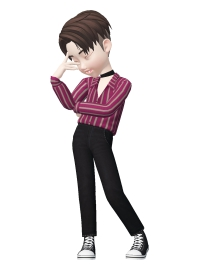
僕はスケーターとして悩んでいるんだ。
何をやってもH生くんとU野くんには
敵わないって・・・
アフロが僕を変える切っ掛けになるんじゃないか
そんな気がするんだ。
パーマじゃなくてね。
ファンキーさとグルーブ感、あの二人には無いものだし。
でもそもそもどうして僕だけアフロじゃないの？姉さん。
ママンは本当に何も話していないのね。
アフロ族には３つのパターンがあるの。
私たち３姉妹は生まれた時からアフロなの。
年頃になって自分でアフロか普通の髪型か
時々でコントロール出来る様になったわ。（！！！ちぃさんの心の声）
もう一つが生涯アフロとは無縁な人。
そしてもう一つが18歳の年に突然アフロになる人なの。
我が一族では過去に一人もいなくて世界的に見ても数人。
私も詳しくは知らないんだけど・・・
僕18歳だよ！
でもアフロにはなっていない。
僕は、僕はこのままなんだ・・・
ちぃ吉
運命の日は18歳の夏至の日なの！
これも巡り合わせかしら。明日は夏至よ。
そして・・間も無く日付が変わるわ！！
ちぃ吉、心の準備をなさい。
みんなにあなたの運命を見届けてもらうのよ！！！
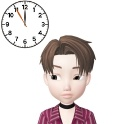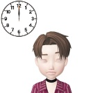
ちぃ吉くんやったわー！
で、伝説の青アフロだ・・・
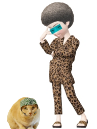
ママンが家を出た理由は
やっぱりこれだったのね・・・
てんてんちゃん、今は、
もう暫くは青アフロには触れずにいてもらえるかしら・・・
数ヶ月後・・・・・
「ねえねえ、ちぃ吉くん５回転飛べる様になったんだって？」
「うん！ニュースで見た見た！！アフロパワーってやつかしら？」
「試合で決まればオリンピックの代表は確実ね」
「そうなったらオーナーがみんなを応援に連れてってくれるって！」
そうよ〜。
みんなで応援に行きましょうね！
さ、お店も今日から再オープンよ。
お客様がもう並んでくださっているわ。
みんな、よろしくね！！
〜おしまい〜
長々とお付き合いありがとうございましたm(_ _)m
その気になったら続編があるかも！？
一年先くらいにねー(*>艸<)

カフェオレ色の梅吉

梅吉 2023年8月10日 永眠


梅吉と出会った譲渡会

犬猫の理由なき殺処分ゼロ
妄想広告
UMEKICHI 光

爆発的に早い！
時々攻撃的！
Thanks to Mr.Boss365
爆発的に早い！
時々攻撃的！
Thanks to Mr.Boss365

梅吉さんが長くなる季節到来ですね。"当たり屋"が笑えます。
ZEPETO劇場まだ謎が!? 気になるよ~。
by zombiekong (2019-04-04 00:24)
おお、だんだんびよーーんと伸びてきましたね。
でもまだ寒いよーーー！
今年はなかなか「春！！！」って感じがしないわ。
風邪治ってきてるようで良かった^^
ゆだんせず完治させてね♪
梅吉くんのくいっと曲げたしっぽ、ぜったいなにか掛けたくなるｗｗ
ZEPETO妄想劇場おつかれさまでした！！
ちぃ吉くん、みごとにアフロになれてよかったねっ
青いアフロ似合ってるよーーー！
これでリンピックの代表は確実^^ 応援するわ♪
今回生首ZEPETOでホラー劇場作ろうと思ったのに、写真撮る前に無くなるなんて・・・ひどいよね＞＜
by リュカ (2019-04-04 01:11)
梅吉くん、しっぽの先まで気をつかっちゃってるんですね。
これなら、自分のしっぽにじゃれるという、マヌケなニャンコあるあるにはならないですねー。
前足に乗せているのも面白いけど、くいっと曲げているのがすごい！
ZEPETO妄想劇場お疲れ様でした。伝説の青アフロ！
もうしばらく触れずにいてって、何か裏があるんでしょうか。
やっぱり続きが出てくる?! 期待しまーす。
by ChatBleu (2019-04-04 06:29)
この尻尾にはハンガー引っ掛けたくなりますね＾＾
by ぽちの輔 (2019-04-04 06:41)
ハンガーでもかけようと思い・・・、猫パンチ面白い^^爆笑しました。
by ニコニコファイト (2019-04-04 06:43)
梅吉さん、お尻尾の管理完璧ですねぇ( ^ω^ )
そして「当たり屋」w
うちはお尻尾の管理がイマイチというよりは
わざと踏み出そうとしてる足の裏に出してる？と言いたくなる時があります(ｰ ｰ;)
で、かみさんが踏んだら「にゃ」「あっ、ごめん」で
私だと踏みそう（ここ重要w）になった瞬間
「ふぎゃーo(｀ω´ )o、フシャー( *｀ω´)」です
by ニッキー (2019-04-04 07:49)
体調回復して良かったです♪
暖かい季節になると、にゃんこが
伸びて来るのですね(#^.^#)
尻尾の管理は抜群♪
確かにハンガーかけたくなりますね（笑
『当り屋梅吉さん』
構って欲しい証拠ですね！
by きぃ (2019-04-04 08:10)
びょ〜んと伸びてるのが、気持ち良さそうです。
で「当たり屋」って、オモロ過ぎやわ(≧∀≦)
関西にはそんなおっさん、多そうやし！
by よーちゃん (2019-04-04 10:30)
こんにちは。
めきめき回復！！ちょっと怖いですが、良かったです（笑）お気を付け下さい。
梅吉君！！伸びてますね？尻尾が蜂さんのようなスタイル！！可愛いなー！！
「前足を踏まれて」骨折には気を付けたいですね。減量が必須かな？
ZEPETO！！
コントロール出来るアフロ！！欲しいです。
突然アフロ？心に傷を負いそうです（笑）
ちぃ吉くん？てんてんちゃん？可愛いいですね（笑）
５回転飛べる？フィギュアスケートかな？
冬のオリンピック？・・・北京ですね！？(=^･ｪ･^=)
by Boss365 (2019-04-04 11:49)
梅吉さんのお尻尾、ほんとにキレイにくるんと足に巻き付いてますね！
これは・・丸まったところに指を突っ込みたくなっちゃいます♪
ウチのはズボッと無防備に伸ばしてる方が圧倒的に多くて、何度踏まれても変えようという気はなさそうです(^▽^;)
私も先日こてつの歯磨きをしようとして、久々に思い切りおでこをパンチされました。
パ～ンといい音がして爆笑でした(≧▽≦)
5回転のためにみんなアフロになったら大変？！
by ゆきち (2019-04-04 12:20)
まだまだ寒いです
ぶり返さないように気をつけてくださいね
陽だまりの猫ちゃんは 幸せニャン のびのびあんよとお手手ニャン
by チャー (2019-04-04 13:17)
お手手にょーーーん♪やりますよねｗ
うちもリラックスしてくるとお手手にょーん。
そしてお手手クロスへと移行するのです(笑)
しっぽ！！まるでワイヤーでも入っているかの
ようにくるんとしていますね(*´ゝ艸･`)ﾌﾟﾌﾟ
うちは無防備に放置しているのでよく私に踏まれます＾＾
当たり屋梅ちゃん(爆w)想像してニマニマしています。
ちぃ吉くんの5回転！！Ｈ生くんもCェンくんも真っ青ｗｗ
by カトリーヌ (2019-04-04 15:24)
梅吉さん、伸びきって来ますね！
暖かくなってきた証拠ですね(^^)
by ma2ma2 (2019-04-04 17:46)
梅吉さん、日向ぼっこでお手手のび～♪
フローリングでびろ～ん＾＾気持ちよさそう。
シッポをくるっとアンヨの上に乗せていたら、踏まれなくていいですね。
当たり屋はよかったですね～ますます賢い！
ZEPETOな、なんと伝説の青アフロ？！
どこからそんな発想が～面白すぎ！え、でも‥それが原因でママが家を出る？
謎は深まるばかり～＾＾
by sana (2019-04-04 18:57)
梅吉さん、尻尾が決まってますね！
でも、日向ぼっこしている時の、の～んびりしている姿とのギャップが素敵です(^^)
by kou (2019-04-04 19:17)
梅吉さんの、のび～としたお姿で春を感じることが出来ますね。^^)
しっぽが器用ですね！ウチのはただボサッと伸ばしているだけで、あまり折りたたみません。
アフロ×（H生選手＋U野選手）＝５～６回転 の法則、見てみたいかも。^^;
by yes_hama (2019-04-04 20:22)
ちぃさん
風邪がめきめき回復しているということは若い証拠ですね。
完治させてくださいね。
梅吉さんのおしっぽ事情（笑）拍手してます。
先端まで気持ちが行き届いて、格好いいですね。
手も伸びーとして、足も伸びーとして、解放できる季節がやって来ましたね。
クリアハンモックも暖かくなって、
クリアそのままで梅吉さんのクリアな肉球を拝んでみたいです（笑）
by kiki (2019-04-04 21:18)
満月広場に春爛漫写真ありがとうございました。⋯って私がちぃおっと様のお写真アップするより早く、ちぃさんがnice!押してくれてたみたいです。なんという早業! (私が遅いんじゃ)追加もよろしくお願いします。
by zombiekong (2019-04-04 21:57)
梅吉さんは尻尾とお手手が長いですね。
ユキは手を伸ばす事がよくありますが、尻尾を伸ばす事はあまりない様な。
尻尾は毛でふさふさなので、一日何度も撫でています。
それが日課になっちゃいました＾＾
by riverwalk (2019-04-04 22:23)
ずいぶんと器用なところにいますねー
（ここ、汚れやすいところなんですよね^^;）
床でのびのーびも気持ち良さそうです。
タワーもすっかり「自分の物」なお顔ですね^^
うちのちゃーは、しっぽはだらーん、です。
まとわりつくからよく踏みそう（かばって転びそうに）になります^^;
by Ja-Kou66 (2019-04-05 00:01)
くいっと曲げたしっぽにハンガー写真 期待してます＾＾
は～い 青アフロには触れずにいま～す♪
by てんてん (2019-04-05 15:18)
日向ぼっこする時、お手手がぴーんとなる率高いですよね(≧▽≦)
ラッコみたいになっている時もあるでしょ！
あれも可愛くて好きなんだ～♪
尻尾の先が前足にくるんも！猫にとっては何気ないしぐさなんだけど
安心するって言うか。不思議な癒し効果があるような気がしちゃう。
ちぃ吉はアフロ効果で5回転が出来るようになったの？！
オリンピックに出たら応援に行かなくちゃね(*^-^*)
by emi (2019-04-05 17:07)
しっぽにハンガーて！笑
私もパンチされたい…（猫に飢えてます…）
by liang (2019-04-05 22:52)
5回は凄い
メダル確実ですね
by (。・_・。)２ｋ (2019-04-05 23:07)
梅吉さん、お手手みょーん!!! 長〜〜〜い♪
おしっぽも、大切に扱ってらっしゃるのですね(^.^)
いっつも踏まれるぼへたちに、お作法を教えてやって欲しいwww
by のらん (2019-04-06 07:58)
18歳の夏至にアフロになる(爆爆
すんごい一族の秘密だったのですね♪
5回転が飛べたらオリンピック優勝間違いなだわ！
ちぃ吉君の未来は約束されてるわ。
梅吉さん手足が長いのね～、うちの二人は短足です。
マンチカンほどじゃないけど( 艸｀*)ﾌﾟﾌﾟｯ
当たり屋か～(笑 ついでに？勢いでがぶっと来ることありますね。
by marimo (2019-04-06 10:27)
ハンガーは重いのでふきんくらいなら許してくれないかしら？(*^_^*)
by palpal (2019-04-06 12:26)
こんにちは。
「なんちゃって千鳥ヶ淵」に花見と思いますが・・・
「ツツジ」ご連絡ありがとうございます。疑問が解けてスッキリしました。
問題は文字数ではない事も判明しました！？(=^･ｪ･^=)
by Boss365 (2019-04-06 15:36)
日々暖かさが増してくると背伸びがしたくなりますね。
by 旅爺さん (2019-04-07 09:21)
zombiekongさん＞
当たり屋そのうち動画でご紹介出来るかなぁ・・・
パジャマ姿のおっとの足が写っていると思われますが
よろしくお願い致します(*>艸<)
ZEPETO劇場のこの先の謎、私もまだ考えてませーんwww
満月広場はsanaさんの素敵な桜写真にnice!をしたら
さっそく私の投稿がアップされていて・・・
「お姉さんもPC前にいらっしゃるわ・・・」と
にやにやしてましたwww
リュカさん＞
この週末は暖かかったのでベランダ遊びもしましたよー。
最近は夜にお布団に入ってくる（自慢w）回数が減って
上で寝る様になってます＾＾
梅吉なりに季節は感じている様だわ＾＾
ZEPETO劇場は本当に疲れたわ〜。
またやる！って思える様になるには時間がかかりそうw
面白かったけどねwww
透明マント、1日で使えなくなっちゃうなんて聞いてないって！
そんなものだったら無料配布、だよねぇぇぇぇ。
ChatBleuさん＞
毛繕いもちゃんと丁寧にするしおしっぽの先まで気を使うし
以外にナルシスト的な男子かもー(*>艸<)
あ、おしっぽが「わしの一部」になったのは結構最近ですw
それまではぐるぐる追い回したり「これなんだー！」って
おしっぽをつかんで見せたら自分でガブガブしてましたwww
おマヌケニャンコ期間もちゃんと経て今の梅吉がー(≧▽≦)
正しい成長の過程をたどっているともいえますな＾＾
青アフロの伝説・・・まだ私の中で形になってない様な・・・
ってかっこいいですけど、なんも考えてません(*>艸<)
とりあえずママンは元パリコレモデルって設定にはなってます。
そう！プラチナブロンド刈り上げのあの方でーす！
ぽちの輔さん＞
一番軽いハンガー選んだんですけどねぇ・・・(-_-メ)
初めは輪ゴムくらいから始めれば良かったwww
ニコニコファイトさん＞
ハンガーくらい良いじゃないねぇ・・・ (-_-メ)
でもパンチも楽しかったですよ＾＾
ニッキーさん＞
踏み出そうとする所にしっぽw
ゴッドマザー様の場合は
そうまでしてかまって欲しいのかなって気がしますが
ニッキーさんの場合は・・・
きっとそれもコミュニケーションなんですよね。
危険を察知する能力を磨いている、とか（う〜ん苦しいwww）(*>艸<)
きぃさん＞
陽だまりで伸びて暑くなってさらに伸びてクールダウン
が徐々に見られる様になってきました＾＾
春も進んでいますね！
『当たり屋梅吉』は確かに、かまってちゃんですねー。
おっとが相手だとどうもかじる＆戦う方向で
遊びたいみたいですwww
よーちゃん＞
さすが梅吉、なにわのおっちゃんを分かってますねwww
誰も教えてないのに風土的DNA？
おそるべし！！
Boss365さん＞
若いので（笑）めきめきなんですよ(*>艸<)もう全快です！！
梅吉のおしっぽの扱い方、可愛いんですよ＾＾
側に行くとくるっと腕に巻きつく様に
私の体に沿わせてくることもあります（自慢w）
ちぃ吉くんのオリンピックはそのまた先の開催年にしたいです。
北京、ツーリストホテルその他に全く期待できませんからwww
やっぱり応援に行くならヨーロッパか北米が良いでーす(*>艸<)
ゆきちさん＞
突っ込んだ指にくるりと尻尾を絡ませてくれると嬉しいのですが
にゃんこのしっぽはそこまで器用ではないので期待してはいけませんね(⌒-⌒;
こてつくんのパンチは完結型なのですね！
うちはパンチの後にぐいっと爪が出て来て対象物を引き寄せて
ガブガブまで持ち込む連続技で攻めて来ますwww
おでこだったら生え際のあたりをガブガブされそうでーす0(≧▽≦)0
アフロの選手、「ふざけてるのか？」とジャッジの心証が悪そうで
全てにおいてマイナス評価になります？なりませんよねw
チャーさん＞
陽だまりでは本当に気持ち良さそうな幸せそうな顔してます＾＾
が、いい加減温まると暑くなるのかずるずる〜っと
液体化するのが面白いんですよ(≧▽≦)
カトリーヌさん＞
ああ！うちもやりますお手手ばってんこ！！
（「ばってんこ」って方言でしょうか・・・）
あれがまたたまらなく可愛いんですよねー＾＾
私は大喜びでカメラを構えてしまいます。
うちの当たり屋さん、演技力と粘り強さがすごいんですwww
おっとがお風呂に入る前に当たり屋さんになることが多いのですが
時に脱衣所＆お風呂場でもガブガブするらしく
「いててててててっ！」と悲鳴が聞こえてくることも(⌒-⌒;
フィギュアのジャンプ、人間の限界って何回転なのでしょうね。
そろそろ女子も４回転の時代になって来そうなので
男子は４回転半とか５回転！？
ma2ma2さん＞
暖かくなると日向でのび〜んと
コンクリートの上でのくりんくるんが定番になります＾＾
sanaさん＞
気づいたらこんな狭いところで手を伸ばしていたので
思わずカメラを構えました＾＾
熱を蓄えた後はフローリングで放出！
触るとほかほかでびっくりしちゃいますw
当たり屋、厚着の季節は良いですが夏は大変なようです。
他人事のようなコメントはなぜか私にはしないからなのです！
おっとは良き遊び相手のようです(*>艸<)
青アフロ・・・ふふふ (=ΦwΦ=)
続きの構想は全くありません。
そのうち閃くのを待つのみ、ですwww
kouさん＞
おシッポ、なかなか良い形に作ってありますよね＾＾
仕舞ってないと踏まれる、と危機感を持たれるほど
踏んだ覚えは全くないのでこれも性格、なのでしょうねー。
yes_hamaさん＞
猫の長さで季節を知る、でしょうか＾＾
夏にはクリアハンモックからでろ〜んとはみ出した寝姿を
ご披露したいと思ってます！
女子のフィギュアも４回転を跳ぶ選手が出て来ましたよね。
男子は５回転の時代に突入する、はずー！！
kikiさん＞
はい！まだ若いらしく（笑）さらにめきめき回復して
すっかり完治をしました＾＾
梅吉は大雑把な性格ですがおしっぽだけはきちっとしているんですよね。
つい最近まで「これなんだー！」とおしっぽを見せると
「いつもわしのうしろにいるやっちゃ！うっとおしいわー！」と
ガブガブしていたのですが最近やっと「わしの一部」と認めたようです。
いままで不遇だったおしっぽくんを思いやって
丁寧に扱っているのでしょうか(*>艸<)
クリアな肉球、明日アップ予定の記事はいい線いっていると思います！！
by ちぃ (2019-04-07 15:39)
riverwalkさん＞
手足、おしっぽおまけに胴と全てが長いですw
そして顔が小さいという実に羨ましい体型です(*>艸<)
ユキちゃんのふっさふさのおしっぽは撫でがいがありそうです！
いいなー！いいなー！！
Ja-Kou66さん＞
窓枠、黒いのは初めてなのでびっくりしました。
(札幌の家は白、複層ガラスだったし二重サッシだったのであまり汚れません）
なんて汚れが目立ちやすいんだー、とw
梅吉は良くここで座っているのですが
お手手伸ばしているのは初めて気づきました＾＾
踏みそうになってかばって転びそう、良くあります！
梅吉は夜中に私がトイレに行くと必ずついてくるのですが
その時が一番やばいです。
すり足、緩慢な動作が基本になってますwww
てんてんさん＞
ハンガーにたどり着くために
まずは輪ゴムくらいから始めようと思ってますw
てんてんさんはzombiekong姉さんの同級生なので
一族のことをよくご存知なのです！
同時にとても心配をしてくださっているという・・・
どうぞよろしくお願いいたします（爆）
emiさん＞
気持ちが良いとぴーんとなるんでしょうねー＾＾
おてて伸びているとリラックスしているな、ご機嫌だなと
私も嬉しくなります！
ラッコ＆ミジンコもあります、あります！
もう全部が可愛いです♪
ちぃ吉の青アフロには秘められたパワーが・・・
って先は全然考えてませんwww
出場するオリンピックはヨーロッパがいいなぁって
自分の希望＆妄想盛り盛りにしてます(*>艸<)
liangさん＞
お！パンチされたいなんてliangさんも猫変態ですね！！
仲間〜、仲間♡
ペチン、と肉球が当たる瞬間はたまらない幸福感が0(≧▽≦)0
2kさん＞
次回の北京大会では本当に成功する選手がいるんじゃ無いかと・・・
by ちぃ (2019-04-07 16:36)
のらんさん＞
手も足も胴もながーい梅吉ですw
おしっぽの扱い、
梅吉はつい最近まで自分のおしっぽを邪険に扱って来たので
「自分に自分でお詫び」をしていると思われます。
お作法のレクチャーはその辺の精神論から始まりそうですよwww
marimoさん＞
節の変わり目に何かが起きる一族ですwww
もっと色々盛り込みたかったのですが
アホ認定されそうなので止めました(*>艸<)
梅吉は手足も胴もながーいのですよ＾＾
ついでに顔も小さくて羨ましい限りです！
腕はリーチが長いのでパンチが伸びてくるので油断なりません(⌒-⌒;
当たり屋、梅吉の場合はついででも勢いでもなく
完全確信犯です0(≧▽≦)0
palpalさん＞
まずは輪ゴムから始めようと思ってますwww
Boss365さん＞
葉っぱの形と、今時期蕾をつけている樹木、でツツジと判断しました＾＾
今月末ごろに咲き始めることでしょう！
旅爺さん＞
暖かさと伸びーは比例するようです＾＾
人間も気持ちが良いと体を伸ばしたくなりますものね！
by ちぃ (2019-04-07 17:55)